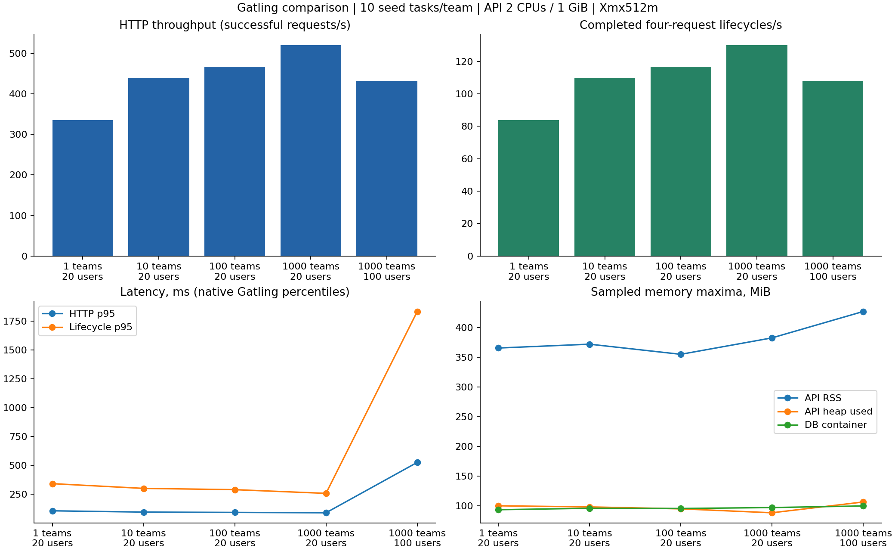
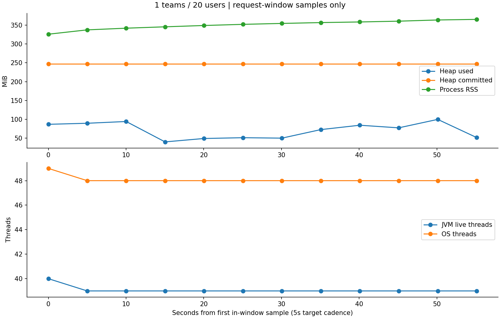
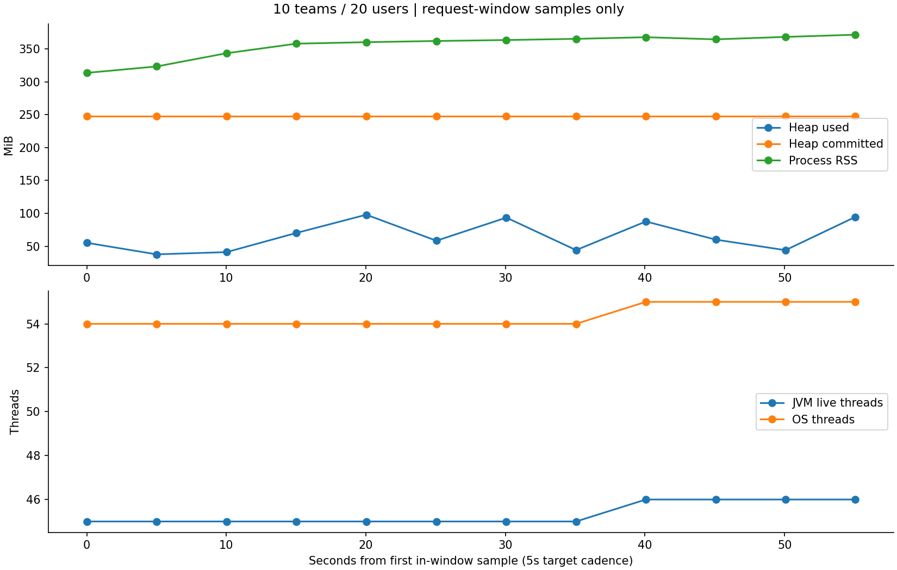
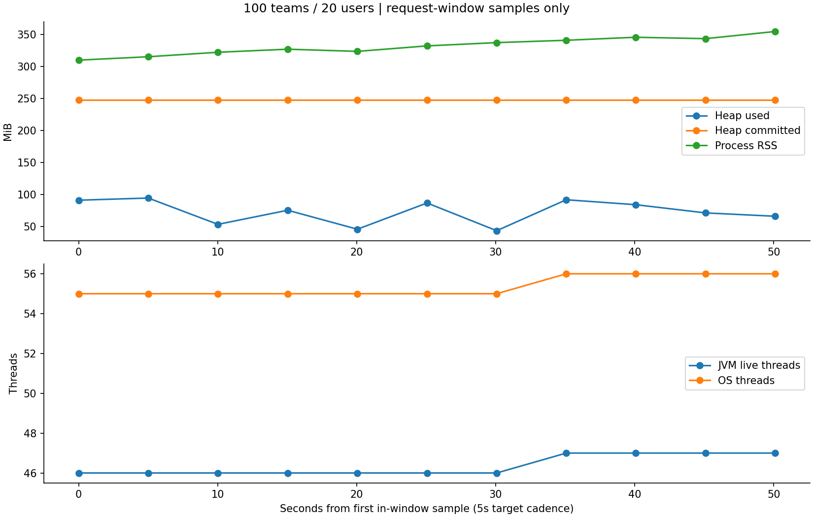
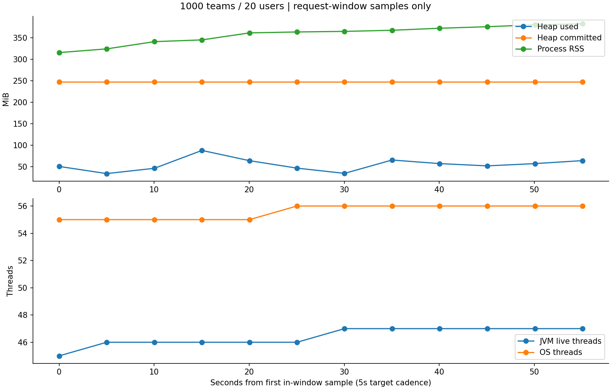
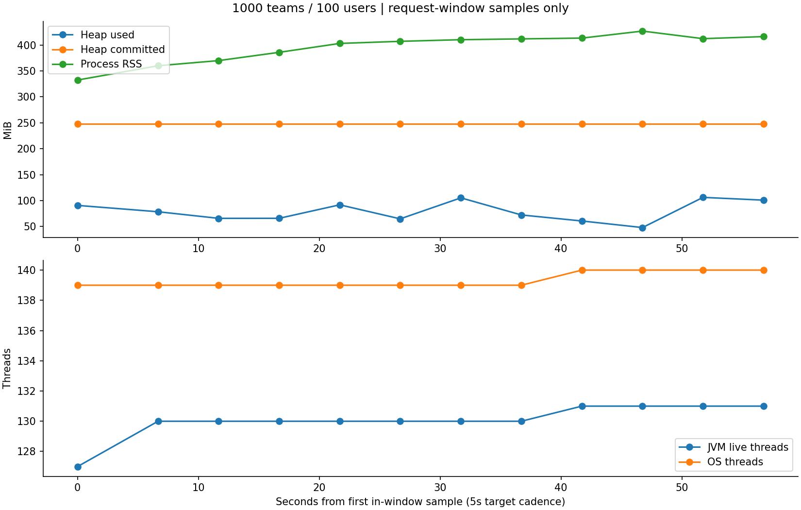

1 / 10 / 100 / 1000 teams · 10 seed tasks/team · 30s warmup + 60s measurement
| Teams | Users | RPS | TPS | HTTP p95 ms | JVM live max* | RSS MiB* | Evidence |
|---|---|---|---|---|---|---|---|
| 1 | 20 | 335.41 | 83.85 | 107 | 40 | 365.4 | Gatling HTML · Resources · Threads · JFR |
| 10 | 20 | 439.08 | 109.77 | 96 | 46 | 371.8 | Gatling HTML · Resources · Threads · JFR |
| 100 | 20 | 466.62 | 116.66 | 93 | 47 | 354.8 | Gatling HTML · Resources · Threads · JFR |
| 1000 | 20 | 520.33 | 130.08 | 90 | 47 | 382.5 | Gatling HTML · Resources · Threads · JFR |
| 1000 | 100 | 431.67 | 107.92 | 526 | 131 | 426.9 | Gatling HTML · Resources · Threads · JFR |
TPS = complete POST → priority PATCH → GET list → DELETE lifecycles. RPS, TPS and latency match native Gatling HTML statistics. Exact first-request-start to last-response-end rates are retained separately in JSON. * Resource maxima are sampled, not exact lifetime maxima. JVM live threads differ from virtual users and OS threads. RSS differs from heap and Docker working-set memory. All measurements are local, instrumented and single-pass; no production SLA is inferred.

| JVM live / OS threads sampled maximum | 40 / 49 |
| JVM threads started between first/last in-window samples | 0 |
| Heap used / committed sampled maximum | 99.8 / 247.6 MiB |
| Configured Xmx | 512 MiB |
| Process RSS / Docker working-set sampled maximum | 365.4 / 352.0 MiB |
| NMT total committed / reserved under-load snapshot | 442.9 / 1980.3 MiB (includes heap) |
| PostgreSQL container memory sampled maximum | 93.2 MiB |
| API / DB CPU sampled maximum | 198.3% / 76.4% of one core |
| GC count / pause time between in-window samples | 13 / 0.0710s |
| Gatling generator RSS / OS threads sampled maximum | 362.1 MiB / 66 |

| JVM live / OS threads sampled maximum | 46 / 55 |
| JVM threads started between first/last in-window samples | 1 |
| Heap used / committed sampled maximum | 97.9 / 247.6 MiB |
| Configured Xmx | 512 MiB |
| Process RSS / Docker working-set sampled maximum | 371.8 / 364.6 MiB |
| NMT total committed / reserved under-load snapshot | 446.5 / 1994.0 MiB (includes heap) |
| PostgreSQL container memory sampled maximum | 95.7 MiB |
| API / DB CPU sampled maximum | 209.2% / 118.9% of one core |
| GC count / pause time between in-window samples | 15 / 0.1100s |
| Gatling generator RSS / OS threads sampled maximum | 350.9 MiB / 67 |

| JVM live / OS threads sampled maximum | 47 / 56 |
| JVM threads started between first/last in-window samples | 1 |
| Heap used / committed sampled maximum | 94.7 / 247.6 MiB |
| Configured Xmx | 512 MiB |
| Process RSS / Docker working-set sampled maximum | 354.8 / 333.3 MiB |
| NMT total committed / reserved under-load snapshot | 447.0 / 1998.9 MiB (includes heap) |
| PostgreSQL container memory sampled maximum | 95.3 MiB |
| API / DB CPU sampled maximum | 211.4% / 115.2% of one core |
| GC count / pause time between in-window samples | 16 / 0.1090s |
| Gatling generator RSS / OS threads sampled maximum | 360.1 MiB / 68 |

| JVM live / OS threads sampled maximum | 47 / 56 |
| JVM threads started between first/last in-window samples | 2 |
| Heap used / committed sampled maximum | 88.1 / 247.6 MiB |
| Configured Xmx | 512 MiB |
| Process RSS / Docker working-set sampled maximum | 382.5 / 366.5 MiB |
| NMT total committed / reserved under-load snapshot | 440.8 / 1986.8 MiB (includes heap) |
| PostgreSQL container memory sampled maximum | 96.9 MiB |
| API / DB CPU sampled maximum | 212.6% / 120.2% of one core |
| GC count / pause time between in-window samples | 18 / 0.1670s |
| Gatling generator RSS / OS threads sampled maximum | 350.0 MiB / 68 |

| JVM live / OS threads sampled maximum | 131 / 140 |
| JVM threads started between first/last in-window samples | 4 |
| Heap used / committed sampled maximum | 106.3 / 247.6 MiB |
| Configured Xmx | 512 MiB |
| Process RSS / Docker working-set sampled maximum | 426.9 / 416.0 MiB |
| NMT total committed / reserved under-load snapshot | 481.7 / 2100.7 MiB (includes heap) |
| PostgreSQL container memory sampled maximum | 99.6 MiB |
| API / DB CPU sampled maximum | 209.9% / 107.2% of one core |
| GC count / pause time between in-window samples | 16 / 0.1910s |
| Gatling generator RSS / OS threads sampled maximum | 365.0 MiB / 67 |
